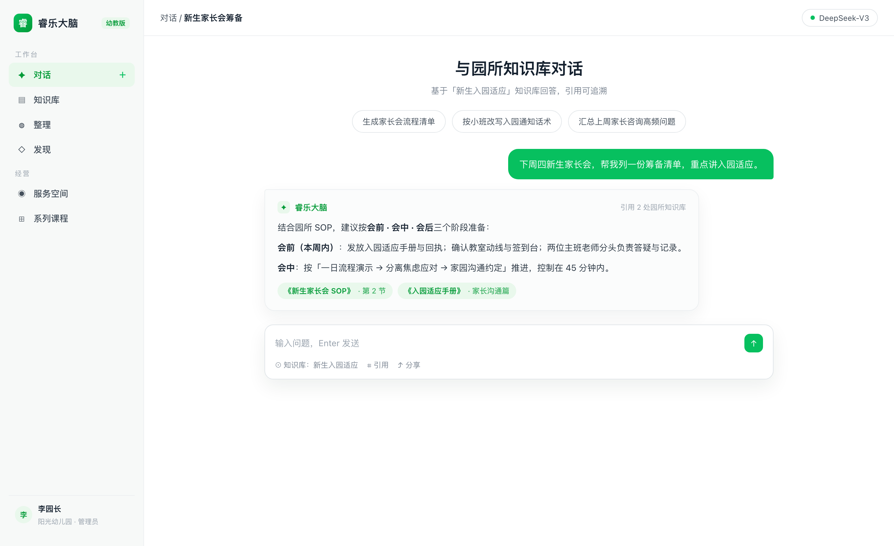

多步推理智能体
自主编排知识检索、MCP 工具与网络搜索，完成多步任务并保留过程可追踪。
PRODUCT MODULES
睿乐大脑的能力围绕园所真实工作流组织：资料进知识库，记录变成果，协作进服务空间，培养靠课程。所有模块共享同一套知识库与权限体系。
MODULE / 01 · 知识库
上传即解析：制度、教案、话术、表格自动分块、摘要并生成候选问题。回答时标注来源，团队可以点回原文核对。

MODULE / 02 · 整理与发现
随手保存的语音、笔记、照片先成为「记忆」；AI 把相关记忆整理成结构化「成果」；成果按 8 大经营场景进入「发现」页，让好经验不再只属于某一个人。
MODULE / 03 · 服务空间
招生顾问、课程顾问、保教团队在各自的服务空间工作：服务对象有档案，沟通有记录，复盘由 AI 辅助完成。知识库为每一次服务提供依据。
MODULE / 04 · 系列课程
把成体系的培训资料一次性上传，系统按文件名自动排序、生成大纲、按讲次组织内容，出现在发现页的「系列课程」页签，供团队按讲学习。
AGENTS & CHANNELS
ReAct 多步推理让智能体能检索知识库、调用工具、搜索网络，完成主题活动设计、复盘报告等复杂任务；多端触达让团队在顺手的地方随手可用。
自主编排知识检索、MCP 工具与网络搜索，完成多步任务并保留过程可追踪。
内置技能沙箱与 MCP 工具生态，支持会话内 @Skill / @MCP 精准调用。
从原始资料自动生成互链的 Wiki 页面与可视化知识图谱，知识体系持续生长。
iOS / Android 独立应用「睿乐大脑」：记忆、发现、服务三大页签，知识检索与服务提醒随身可用。
企业微信、飞书、钉钉、Slack、Telegram 与微信小程序中直接提问。
App 连接录音卡，把面谈、巡园、教研现场的一手记录同步归档为结构化记忆。
把园所智能体嵌入官网或家长服务页，域名白名单与限流可控。
权限范围 API Key 与调试台，把园所知识能力接入现有业务系统。
NEXT STEP
大多数园所从资料整理与高频问答起步，两周内完成知识库搭建。